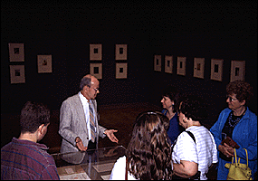

The Minneapolis Institute of Arts
Main Menu ~ Events ~ Educational Programs ~ Free Public Tours ~ Scheduled Adult Tours ~ Self-Guided Tours ~ Tours for Students ~ Tour Subjects ~ Historic Prairie School House
Tours
 34k
- Free Public Tours
Free public tours are offered of the permanent collection and special exhibitions Tuesday through Sunday at 2:00 p.m. Additional tours are offered at 1:00 p.m. Saturdays and Sundays and at 7 p.m. on Thursdays. Reservations are not required.
- Scheduled Adult Tours
Adult visitors in groups of 10 or more may schedule a docent-led tour on the subject of their choice during regular museum hours by calling the Tour Scheduling Office, (612) 870-3141. Tour subjects.
- Self-Guided Tours
To schedule a group of adults or students without a docent, please call the Tour Scheduling Office at (612) 870-3141 to ensure that gallery space is available.
- Tours for Students (See Teaching the Arts)
Docent-led tours can be adapted to many age levels, abilities, and interests. We also tailor tours to specific classroom studies. Tours may be scheduled by calling the Tour Scheduling Office, (612) 870-3141.
- Historic Prairie School House
Tour one of the most significant examples of Prairie School architecture in the country; open to the public free of charge on the second Saturday of each month. Reservations are required; call (612) 870-3131.
Main Menu ~ Events ~ Educational Programs ~ Free Public Tours ~ Scheduled Adult Tours ~ Self-Guided Tours ~ Tours for Students ~ Tour Subjects ~ Historic Prairie School House